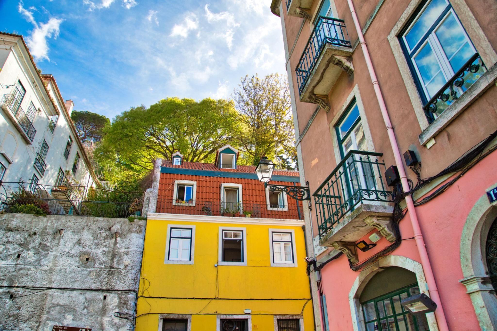
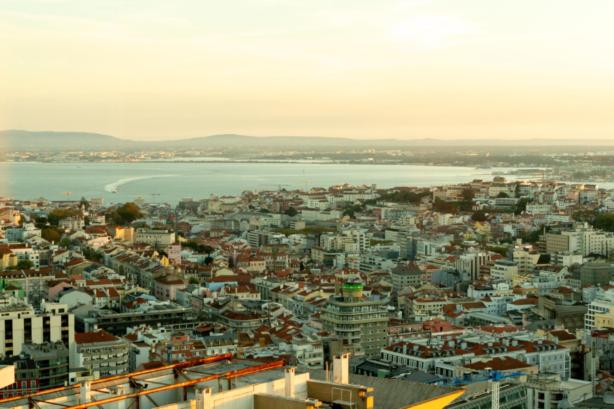
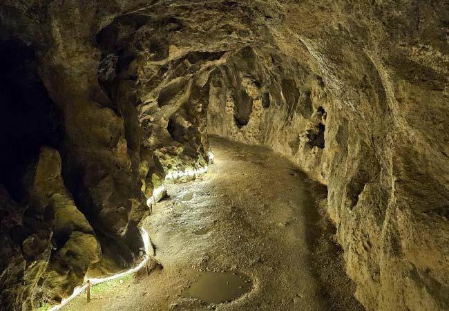
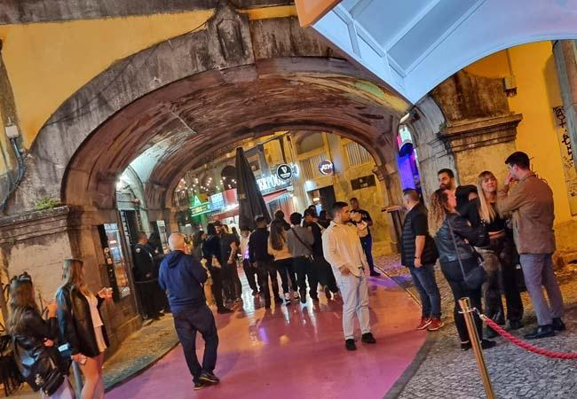

The Vibe
Lisbon feels like a reset. After cities like London and Paris, it's slower, warmer, and way more relaxed. You don't feel pressure to do everything — which is honestly what makes it so nice.
It's the kind of place where you spend more time enjoying the moment than trying to hit every landmark. There's not a crazy amount to "do," but that's kind of the point. The golden light, the tiles, the food, the people — Lisbon just works.

Best For
- Chill weekend trips (no pressure vibes)
- Food + wine lovers (affordable and delicious)
- Good weather seekers (sunny most of the year)
- Slowing down a bit (perfect for that)
What to Do
Lisbon doesn't require a packed itinerary. Pick a few things that interest you, then spend the rest of the time just existing.
Must-Do
Tram 28 — The classic yellow tram through all the hilly neighborhoods. Just ride it end-to-end. Alfama district — Winding streets, low-key vibe, actual locals. Viewpoints (miradouros) — Multiple views of the city. Each one is a photo.
Experiences Worth It
Sintra day trip — Regaleira (the creepy initiatic wells) > Pena Palace (the colorful palace). 45 mins by train. Feels like another world. Sunset boat cruise — Seeing the city from the water at golden hour is unreal. Walking along the waterfront — Free, beautiful, and genuinely one of the best parts.

🌅 Sunset Everything
Lisbon sunsets are unreal. This is not an exaggeration. The light hits at the right angle, the city glows, and you'll end up doing this every evening without planning to.
Rooftop bars, viewpoints, walking along the water, or just sitting at a café — the sunset is the main event. Get a drink, find a spot, and watch the city transform.
🍷 Wine + Food Scene
The food is SO good here, and way more affordable than other European cities. Wine tastings are actually fun and worth doing here — you're not just sipping expensive stuff, you're learning about a wine region that's genuinely interesting.
Brunch & Casual
- Dear Breakfast - Best brunch spot
- Time Out Market - Food court of amazing local spots
- Pastel de nata - Everywhere, €1–2, ridiculously good
Nice Dinner
- JNcQUOI Asia - Upscale but not pretentious
- Seafood restaurants - By the water, fresh catch
- Wine bars - Portuguese wines are underrated
Wine Tasting
- Try Vinho Verde (slightly fizzy, refreshing)
- Douro Valley wines (bold reds)
- Local wine bars do tastings for €10–20

🛥️ Boat Day / Cruise
This ended up being one of the best parts of the trip. Seeing the city from the water at sunset is unreal. You don't need an expensive sunset cruise — even just a ferry ride to Cacilhas gives you amazing views.
Sunset boat cruise around the city + drinks = one of those perfect Lisbon moments.
Nightlife & Evening Vibes
Lisbon has way more of a nightlife scene than you'd expect for such a chill city. But it's not high-pressure — you can do as much or as little as you want.
Pink Street (Rua Nova do Carmo)
Literally pink-painted street full of bars and clubs. Gets chaotic late at night but fun and friendly. Good people-watching.
Rooftop Bars
Multiple options with incredible views. Primo rooftop, Topo, Buddha Bar — take your pick. Great for sunset drinks, stay for the vibe.
Local Pubs & Tascas
Smaller, more authentic spots where locals actually hang out. Way better than the tourist bars on Pink Street.

Where to Stay
Best Neighborhoods
Alfama — Most character, older winding streets, feels like an actual neighborhood (not touristy).
Baixa / Chiado — Central and easy to navigate, lots of restaurants and shops, classic Lisbon feel.
Príncipe Real — Trendy, LGBTQ+ friendly, good restaurants and bars.
Tip: Lisbon is a great Airbnb city. Good apartments at reasonable prices.
Budget Options
- Hostels: €16–22/night
- Airbnb: €30–50/night for rooms
- Budget hotels: €40–65/night
Real Tips
- Hills are no joke. Wear good shoes. Lisbon is built on steep hills and your feet will thank you for proper footwear.
- Ubers are super cheap. Like €3–5 across the city. Use them when you're tired from hills.
- Perfect city to slow down. Don't try to do everything. Sit at cafés, watch sunsets, eat well.
- Weather is amazing even in off-season. March–May or September–October are perfect. Summer is hot but still great.
- Do at least one wine tasting. It's not expensive and genuinely interesting here.
- Tram 28 gets packed in peak hours. Go early morning or late afternoon. Watch for pickpockets (it's a thing on this tram).
- Monday = quiet day. Many places closed or quiet. Plan accordingly, but it's also nice and peaceful.
Sample Weekend Plan
This is flexible — Lisbon doesn't require rigid scheduling.
Friday
Arrive, dinner → rooftop drinks → explore the neighborhood. Keep it easy.
Saturday
Morning: Brunch somewhere nice. Midday: Either Tram 28 ride through neighborhoods OR day trip to Sintra. Evening: Sunset boat cruise → dinner → Pink Street or rooftop bar.
Sunday
Morning: Slow brunch + coffee. Midday: Wander Alfama or find a viewpoint. Afternoon: Shopping or more neighborhoods. Evening: Casual dinner, rest up.
Pro tip: The best Lisbon moments happen when you're not planning them. This is a city where sitting at a café watching people is a legitimate activity.